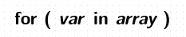
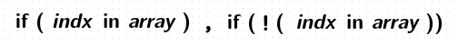

Arrays
사실상 awk 의 메인 기능이라고 할 수 있습니다. awk array 는 associative array 인데 인덱스로 숫자, 스트링 상관없이 섞어 사용할 수가 있습니다. index 나 value 별로 sort 할 수도 있고 Multidimensional array 도 사용할 수 있으므로 array 를 활용하면 대부분의 문제를 해결할 수 있습니다.
array 원소 추출하기

$ awk '
BEGIN {
arr["apple"] = 1.23
arr[35] = "mango"
arr[0.05] = 100
arr["fruit"] = "banana"
arr[-7] = "guava"
for (idx in arr) {
printf "index: %-10s value: %s\n" ,idx ,arr[idx]
}
}'
index: 35 value: mango
index: 0.05 value: 100
index: apple value: 1.23
index: fruit value: banana
index: -7 value: guava
array 원소 체크하기

$ awk -f - <<\EOF
BEGIN {
fruit["apple"] = 4
fruit["mango"] = 12
fruit["guava"] = 8
fruit["banana"] = 16
if ("apple" in fruit)
print "We have apple."
else
print "We do not have apple."
delete fruit["apple"]
print "fruit[\"apple\"] has been deleted."
if ("apple" in fruit)
print "We have apple."
else
print "We do not have apple."
}
EOF
We have apple.
fruit["apple"] has been deleted.
We do not have apple.
logical NOT 은 다음과 같이 합니다.
if ( ! ("apple" in fruit)) ...
array 삭제하기
delete 문은 개별 array 원소를 삭제할 때, 또는 해당 array 전체를 삭제할 때 사용할 수 있습니다.
$ awk '
BEGIN {
fruit["apple"] = 4
fruit["mango"] = 12
fruit["guava"] = 8
fruit["banana"] = 16
print "fruit array length: " length(fruit)
delete fruit["apple"] # array 원소 삭제
print "fruit array length: " length(fruit)
delete fruit # array 전체 삭제
print "fruit array length: " length(fruit)
}'
fruit array length: 4
fruit array length: 3
fruit array length: 0
for 반복문 실행중에 array 원소 또는 array 전체를 삭제하면 length 값은 변하지만 반복 횟수에는 영향을 미치지 않습니다. 다음번 for 반복문 실행시에 반영이 됩니다.
$ awk 'BEGIN {
a[11]=100;
a[22]=200;
a[33]=300;
a[44]=400;
a[55]=500;
for (i in a ) {
printf "length: %s index: %s value: %s\n", length(a), i, a[i];
delete a[33]
delete a[44]
}
print "------------------------------"
for (i in a ) {
printf "length: %s index: %s value: %s\n", length(a), i, a[i];
}
}'
length: 5 index: 11 value: 100 # index 33, 44 원소가 삭제되어 length 값이 변경되었지만
length: 3 index: 22 value: 200 # 반복 횟수는 기존 원소 개수대로 5 번이 된다.
length: 3 index: 33 value:
length: 3 index: 44 value:
length: 3 index: 55 value: 500
------------------------------
length: 3 index: 11 value: 100 # 다음번 for 반복문 실행시에 반영된다.
length: 3 index: 22 value: 200
length: 3 index: 55 value: 500
# for 반복문 실행중에 삭제한 원소가 출력되지 않게 하려면
# 다음과 같이 value 값이 empty 인지 체크하면 됩니다.
$ awk 'BEGIN {
a[11]=100;
a[22]=200;
a[33]=300;
a[44]=400;
a[55]=500;
for (i in a ) {
if ( a[i] != "" ) {
printf "length: %s index: %s value: %s\n", length(a), i, a[i];
delete a[33] # 반복문 실행중에 원소를 삭제
delete a[44]
}
}
}'
length: 5 index: 11 value: 100
length: 3 index: 22 value: 200
length: 5 index: 55 value: 500
마찬가지로 for 반복문 실행중에 추가한 원소는 출력에 포함되지 않습니다. 다음번 for 반복문 실행시에 반영됩니다.
$ awk 'BEGIN {
a[11]=100;
a[22]=200;
a[33]=300;
for (i in a ) {
printf "length: %s index: %s value: %s\n", length(a), i, a[i];
a[44]=400 # 반복문 실행중에 원소를 추가
a[55]=500
}
print "------------------------------"
for (i in a ) {
printf "length: %s index: %s value: %s\n", length(a), i, a[i];
}
}'
length: 3 index: 11 value: 100 # for 반복문 실행중에 추가한 원소는
length: 5 index: 22 value: 200 # 출력에 포함되지 않는다.
length: 5 index: 33 value: 300
------------------------------
length: 5 index: 11 value: 100 # 다음번 for 반복문 실행시에 반영된다.
length: 5 index: 22 value: 200
length: 5 index: 33 value: 300
length: 5 index: 44 value: 400
length: 5 index: 55 value: 500
새로운 레코드 입력시 마다 기존에 사용되던 array 변수를 reset 해 사용하려면 delete 합니다.
BEGIN { token[0][0]; stack[0] }
{
idx = 0
tokenize(token, $0)
. . .
delete token # 다음 레코드 입력시에는 array 가 초기화 된다.
delete stack
}
delete 문을 적절히 사용하면 추가적인 메모리 사용을 제한할 수 있습니다. 가령 array A 를 생성하는데 1G 메모리가 사용되고, array B 를 생성하는데 1G, array C 를 생성하는데 1G 가 사용된다면 awk 실행시 총 3G 메모리가 필요하게 됩니다. 하지만 array B 를 생성하기 전에 A 를 삭제하고, array C 를 생성하기 전에 B 를 삭제하게 되면 awk 실행 중에 사용되는 전체 메모리를 1G 로 제한할 수 있습니다.
한번 메모리가 특정 크기로 사용되고 나면 delete 한다고 해서 반환되지는 않습니다. 그러니까 array A, B 를 생성하여 메모리 사용량이 2G 가 되었다면 이후 A, B 를 delete 한다고 해서 메모리가 반환되지는 않지만 array C 를 생성할 때는 추가적인 메모리가 사용되지 않는다는 점입니다.
보통 JOIN 연산을 할때 데이터를 array 를 이용해 메모리로 읽어 들이는데 데이터 사이즈가 크고 여러번 array 가 생성되어 사용된다면 먼저 delete 문을 이용해 사용이 끝난 array 를 삭제해주는 것이 좋겠습니다.
Multidimensional arrays
awk 에서 다차원 배열은 index 로 다음과 같이 여러 가지 형태를 모두 사용할 수 있습니다.
그리고 대입 연산은 scalar context 이므로 array 를 값으로 사용할 수는 없습니다.
arr[1][2] = 3
arr["animal"][1] = "dog"
arr[1]["orange"] = 4
arr["planet"]["mars"] = 4
arr[1][3][1, "name"] = "barney"
array 명칭과 관련해서는 아래와 같은 배열의 경우
fruit 을 main array 라고 하고 fruit[1], fruit[2] 을 subarray 라고 합니다.
fruit[1][1]
fruit[1][2]
...
fruit[2][1]
fruit[2][2]
...
scalar 와 array 의 구분
# foo 는 array, foo[1] 는 scalar
foo[1] = 1
# foo, foo[1] 는 array, foo[1][2] 는 scalar
foo[1][2] = 2
# foo[1] 은 scalar 가 되므로 foo[1][2] 에서 array 로 사용하여 오류 발생
$ awk 'BEGIN {
foo[1] = 3
foo[1][2] = 4;
}'
awk: cmd. line:3: fatal: attempt to use scalar 'foo["1"]' as an array
array length
length() 함수는 SQL DISTINCT 절을 구현할 때 활용됩니다.
$ awk 'BEGIN {
arr[1][1][1] = 1
arr[1][1][2] = 2
arr[1][1][3] = 3
arr[1][2][1] = 4
print length(arr)
print length(arr[1])
print length(arr[1][1])
}'
1 # arr[1]
2 # arr[1][1], arr[1][2]
3 # arr[1][1][1], arr[1][1][2], arr[1][1][3]
한가지 주의할 점은 다음과 같이 직접 설정하지 않은 array 원소가 코드 중에 사용될 경우에도 array 원소가 생성된다는 것입니다.
$ awk 'BEGIN {
a["AAA"] = 111
if ( a["BBB"] ) print "yes" # 또는 print a["BBB"]
print length(a)
for ( i in a ) print i
}'
2 # a["BBB"] 값을 체크만 했을뿐인데 array 원소가 추가됨
AAA
BBB
하지만 for 반복문 실행중에 생성된 원소는 반복 횟수에 영향을 미치지 않습니다. 다음번 for 반복문 실행시에 반영이 됩니다.
$ awk 'BEGIN {
a[11]=100;
a[22]=200;
a[33]=300;
for (i in a ) {
printf "length: %s index: %s value: %s\n", length(a), i, a[i];
printf a[44] # 여기서 새로 array 원소가 생성됨
printf a[55]
}
print "------------------------------"
for (i in a ) {
printf "length: %s index: %s value: %s\n", length(a), i, a[i];
}
}'
length: 3 index: 11 value: 100 # for 반복문 실행중에 원소가 생성되어 length 값이
length: 5 index: 22 value: 200 # 변경되었지만 반복 횟수에는 영향을 미치지 않는다.
length: 5 index: 33 value: 300
------------------------------
length: 5 index: 11 value: 100 # 다음번 for 반복문이 실행될때 반영된다.
length: 5 index: 22 value: 200
length: 5 index: 33 value: 300
length: 5 index: 44 value:
length: 5 index: 55 value:
Arrays of Arrays
$ awk 'BEGIN{
arr["fruit"][1] = "apple"
arr["fruit"][2] = "orange"
arr["fruit"][3] = "banana"
arr["animal"][1] = "dog"
arr["animal"][2] = "cat"
arr["animal"][3] = "mouse"
for (i in arr)
for(j in arr[i])
printf "%s:%s = %s\n", i, j, arr[i][j]
}'
fruit:1 = apple
fruit:2 = orange
fruit:3 = banana
animal:1 = dog
animal:2 = cat
animal:3 = mouse
---------------------------------------------------
$ awk 'BEGIN {
fruit["apple"]["study"] = 4
fruit["apple"]["kitchen"] = 5
fruit["mango"] = 12
fruit["guava"] = 8
fruit["banana"] = 16
for (j in fruit) {
if (isarray (fruit[j])) { # isarray 함수를 이용한 타입 체크
for (k in fruit[j])
printf "%s in %s = %d numbers\n", j, k, fruit[j][k]
} else {
printf "%s: %d numbers\n", j, fruit[j]
}
}
}'
guava: 8 numbers
mango: 12 numbers
apple in kitchen = 5 numbers
apple in study = 4 numbers
banana: 16 numbers
Recursion 을 이용한 다차원 배열 값 프린트
$ awk '
BEGIN {
walk_array(PROCINFO, "PROCINFO")
}
function walk_array(arr, name, i)
{
for (i in arr) {
if (isarray(arr[i]))
walk_array(arr[i], (name "[" i "]"))
else
printf("%s[%s] = %s\n", name, i, arr[i])
}
}'
.....
.....
PROCINFO[gid] = 1000
PROCINFO[mpfr_version] = GNU MPFR 3.1.5
PROCINFO[group2] = 24
PROCINFO[egid] = 1000
PROCINFO[group3] = 27
PROCINFO[identifiers][OFS] = scalar
PROCINFO[identifiers][rand] = builtin
PROCINFO[identifiers][ARGC] = scalar
PROCINFO[identifiers][dcgettext] = builtin
PROCINFO[identifiers][gsub] = builtin
PROCINFO[identifiers][PREC] = scalar
.....
.....
Comma 와 SUBSEP 을 이용하는 방법
인덱스에는 어떤 문자도 사용할 수 있기 때문에 특정 문자를 구분자로 해서 다차원 배열을 구성할 수 있습니다.
arr[idx1@idx2@idx3] or arr[idx1#idx2#idx3] or arr[idx1/idx2/idx3] ...
이것을 언어 차원에 , 와 SUBSEP 를 이용해 쉽게 사용할 수 있도록 해준 것인데요.
그러므로 arr[idx1, idx2] 은 사실상 arr[idx1 SUBSEP idx2] 와 동일합니다.
SUBSEP 값은 기본적으로 \034 인 non-printing 문자를 사용합니다.
인덱스에 [idx1, idx2] 가 사용되었다면 원소 체크에도 (idx1, idx2) in array 형태가 사용됩니다.
$ awk 'BEGIN {
arr[0, 0] = 45
arr[2,3] = "hello"
arr[1 , 1] = "hi"
for (i = 0; i < 3; i++)
for (j = 0; j < 4; j++)
if ((i, j) in arr) # (i, j) in array 형태를 이용해 원소 체크
printf ("arr[%d, %d] = %s\n", i, j, arr[i, j])
}'
arr[0, 0] = 45
arr[1, 1] = hi
arr[2, 3] = hello
split 함수를 이용한 인덱스 분리
$ awk 'BEGIN{
arr["fruit","apple",15]
arr["fruit","orange",35]
arr["fruit","banana",55]
for(idx in arr) {
split(idx, a, SUBSEP)
print a[1], a[2], a[3]
}
}'
fruit orange 35
fruit apple 15
fruit banana 55
index 를 숫자 비교를 해서 정렬할때는 , 뒷 부분은 스트링 비교를 하게 됩니다.
$ awk 'BEGIN { a[9,9]=10; a[10,10]=20; a[11,11]=30
PROCINFO["sorted_in"] = "@ind_num_asc"
for (i in a) print a[i]
}'
10
20
30
$ awk 'BEGIN { a[1,9]=10; a[1,10]=20; a[1,11]=30
PROCINFO["sorted_in"] = "@ind_num_asc"
for (i in a) print a[i]
}'
20
30
10
Subarray 사용시 주의할 점
split 함수는 실행 결과로 두 번째 인수가 array 가 되는데요.
다음과 같이 두 번째 인수에 바로 subarray arr[1], arr[2] 를 사용하게 되면
아직 array 가 구성되지 않은 상태라 오류가 발생합니다.
$ awk 'BEGIN {
split("aa:bb:cc", arr[1], ":"); print arr[1][2]
split("11:22:33", arr[2], ":"); print arr[2][2]
}'
awk: cmd. line:2: fatal: split: second argument is not an array
따라서 다음과 같이 arr[1][1], arr[2][1] 를 먼저 선언하여 arr[1], arr[2] 를
array 로 만들어 줘야 합니다.
$ awk 'BEGIN {
arr[1][1]
split("aa:bb:cc", arr[1], ":"); print arr[1][2]
arr[2][1]
split("11:22:33", arr[2], ":"); print arr[2][2]
}'
bb
22
-------------------------------------------------------
$ awk 'BEGIN {
arr[1][1]
split("aa:bb:cc", arr[1], ":")
arr[2][1]
split("11:22:33", arr[2], ":")
for (i in arr)
for (j in arr[i])
print "arr[" i "][" j "] = " arr[i][j]
}'
arr[1][1] = aa
arr[1][2] = bb
arr[1][3] = cc
arr[2][1] = 11
arr[2][2] = 22
arr[2][3] = 33
array index 는 스트링으로 비교됩니다.
array index 값이 숫자일 경우는 먼저 스트링으로 변환된 후 비교됩니다.
따라서 다음과 같은 경우 모두 array 원소 개수는 1 개가 되고 값은 200 이 됩니다.
$ awk 'BEGIN {
arr[100] = 100
arr["100"] = 200
for ( i in arr ) printf "index : %s, value : %s\n", i , arr[i]
}'
index : 100, value : 200
$ awk 'BEGIN {
arr[-100] = 100
arr["-100"] = 200
for ( i in arr ) printf "index : %s, value : %s\n", i , arr[i]
}'
index : -100, value : 200
$ awk 'BEGIN {
arr[0.123] = 100
arr["0.123"] = 200
for ( i in arr ) printf "index : %s, value : %s\n", i , arr[i]
}'
index : 0.123, value : 200
숫자 17.0 이 스트링으로 변환되면 17 이 되므로
arr[17] 와 arr[17.0] 는 같은 원소가 됩니다.
# printf "%s", 17.0 값은 17
$ awk 'BEGIN {
arr[17] = 100
arr[17.0] = 200
arr["17.0"] = 300
for ( i in arr ) printf "index : %s, value : %s\n", i , arr[i]
}'
index : 17.0, value : 300
index : 17, value : 200
소수가 스트링으로 변환될 때는 CONVFMT 값의 적용을 받습니다.
CONVFMT 의 기본값은 %.6g 이므로 다음과 같은 경우 숫자 12.3456789 가 "12.3457" 스트링이 됩니다.
스트링 "12.3457" 과 "12.3456789" 는 다른 값이므로 결과적으로 2 개의 원소가 됩니다.
$ awk 'BEGIN {
arr[12.3456789] = 100
arr["12.3456789"] = 200
for ( i in arr ) printf "index : %s, value : %s\n", i , arr[i]
}'
index : 12.3456789, value : 200
index : 12.3457, value : 100
# %.8f 로 출력하면 index 값이 같게 나온다. (하나는 숫자, 하나는 스트링)
$ awk 'BEGIN {
arr[12.3456789] = 100
arr["12.3456789"] = 200
for ( i in arr ) printf "index : %.8f, value : %s\n", i , arr[i]
}'
index : 12.34567890, value : 200
index : 12.34567890, value : 100
# printf "%s", 12.3456789 값은 12.3457
# printf "%s", 12.34567 값도 12.3457
# 따라서 index 값이 같게 취급되어 첫번째 원소에 다시 200 이 대입된다.
$ awk 'BEGIN {
arr[12.3456789] = 100
arr[12.34567] = 200
for ( i in arr ) printf "index : %.8f, value : %s\n", i , arr[i]
}'
index : 12.34567890, value : 200
$ awk 'BEGIN {
arr1[12.3456789]
arr2[12.34567]
for ( i in arr1 )
for ( j in arr2 )
if ( i == j ) { print i, j; printf "%.8f %.8f\n", i, j }
}'
12.3457 12.3457
12.34567890 12.34567000
Octal 과 hexadecimal 은 10 진수로 처리됩니다.
# printf "%s", 021 값은 17
# printf "%s", 0x11 값은 17
$ awk 'BEGIN {
arr[17] = 100
arr["17"] = 200
arr[021] = 300 # Octal
arr[0x11] = 400 # Hexadecimal
for ( i in arr ) printf "index : %s, value : %s\n", i , arr[i]
}'
index : 17, value : 400 # 최종적으로 마지막 값인 400 이 된다.
Quiz
stack 은 context 유지에 사용되는 중요한 자료구조 인데요.
array 를 이용해 stack 자료구조를 만들려면 어떻게 할까요?
$ awk -f - <<\EOF
BEGIN {
stack[0] # 여기서 원소가 하나 생성돼 length 가 1 이 된다.
print "stack length: " slen(stack) # 따라서 stack length 를 구할때는 -1 을 합니다.
push(stack, 10)
print "stack length: " slen(stack)
push(stack, 20)
print "stack length: " slen(stack)
push(stack, 30)
print "stack length: " slen(stack)
print pop(stack)
print "stack length: " slen(stack)
print pop(stack)
print "stack length: " slen(stack)
print pop(stack)
print "stack length: " slen(stack)
}
function push(arr, val) {
arr[ length(arr) ] = val # push 되는 원소는 stack[1] 부터 들어가게 됩니다.
}
function pop(arr, ret) {
if ( length(arr) > 1 ) {
ret = arr[ length(arr) - 1 ]
delete arr[ length(arr) - 1 ]
}
return ret
}
function peek(arr, ret) {
if ( length(arr) > 1 ) {
ret = arr[ length(arr) - 1 ]
}
return ret
}
function slen(arr) {
return length(arr) - 1
}
EOF
####### 실행 결과 #######
stack length: 0
stack length: 1
stack length: 2
stack length: 3
30
stack length: 2
20
stack length: 1
10
stack length: 0